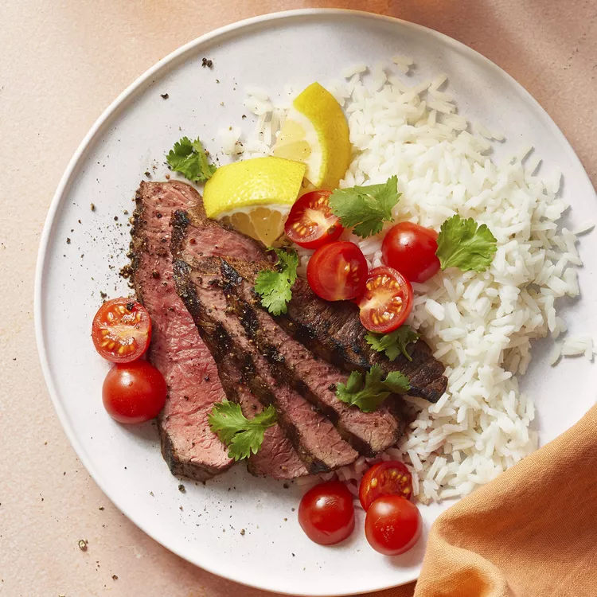

Home
Picanha

Description
This churrascaria-style picanha recipe is a version of a famous steak found in Brazilian steakhouses. Serve with a tomato vinaigrette.
Ingredients
- 3 cloves garlic cloves, crushed, or more to taste
- 1 teaspoon kosher salt, or more to taste
- 1 pound beef top sirloin, trimmed of excess fat
- ¼ cup lemon juice
- 1 tablespoon olive oil, or as needed
Steps
- Mix crushed garlic and salt together in a bowl until it makes a paste.
- Rub garlic paste all over meat. Place in a bowl; cover with lemon juice. Marinate 30 minutes to 4 hours.
Remove meat from lemon juice. Baste with olive oil.
- Preheat an outdoor grill for high heat and lightly oil the grate.
- Cook meat on the preheated grill, turning frequently until outer edges are charred,
but center is still raw, about 5 minutes. Remove from heat; slice off charred edges, cutting against grain.
- Return raw meat to the grill. Cook until meat is firm and slightly pink in the center, about 5 minutes per side.
An instant-read thermometer inserted into the center should read 140 degrees F (60 degrees C).